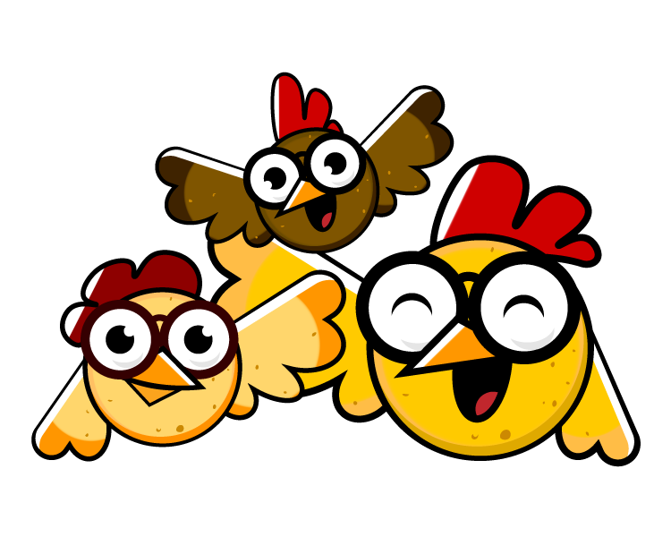
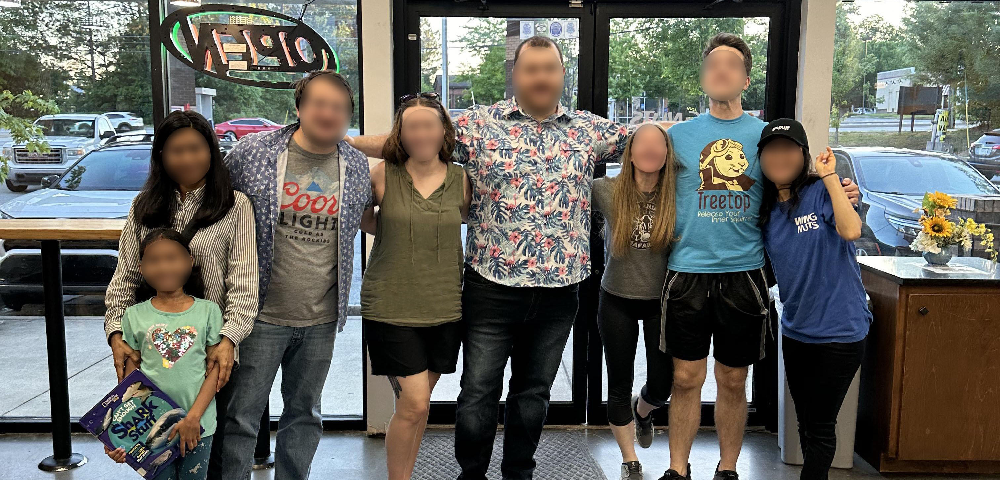

About Us
We are located right outside of Georgia Tech on 768 Marietta St. NW. Of course, we are happy to serve all students from Georgia State, Morehouse, and Spelman Universities too!
Our Values
Community
Wingnut Wednesday has been a Tech Tradition for the last 20 years, bringing students together outside of the classroom every week! We welcome everyone, regardless of background or identity.
Education
We value education, so we welcome students to study and work on assignments in our comfortable and supportive environment—all while enjoying our delicious, crispy chicken wings.
Meet the Team
April Im is the proud owner of Wingnuts, a local favorite known for its delicious fried chicken wings. Wingnuts offers a cozy atmosphere and serves as a favorite hangout for the surrounding students and families.
